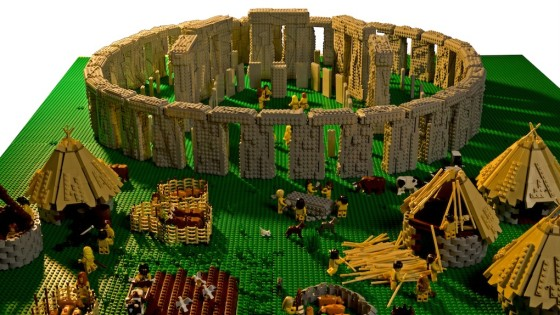
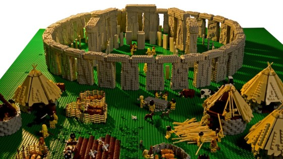
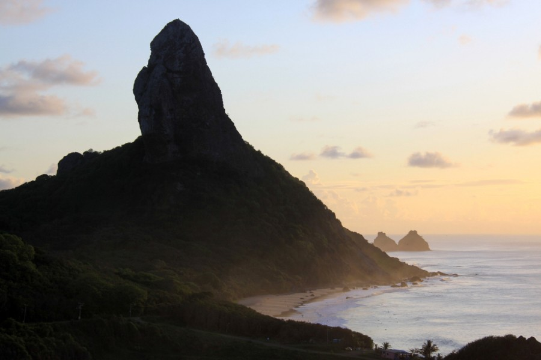

Steinchen auf Steinchen
Ob die sieben Weltwunder oder Kulturerbestätten, der Brite Warren Elsmore baut alles nach - aus Lego. Erkennen Sie die Sehenswürdigkeiten auch, wenn sie aus Plastik sind?
Zwei
Autor: Warren Elsmore
Ob die sieben Weltwunder oder Kulturerbestätten, der Brite Warren Elsmore baut alles nach - aus Lego. Erkennen Sie die Sehenswürdigkeiten auch, wenn sie aus Plastik sind?
Zwei
Autor: Warren Elsmore
Unberührte Strände, Delfine im türkisfarbenen Meer und tropische Vegetation: Fernando de Noronha gleicht einem Paradies. Aber die Schönheit der brasilianischen Insel lässt sich nur mit strengen Naturschutzregeln bewahren.
Autor: dpa-tmn